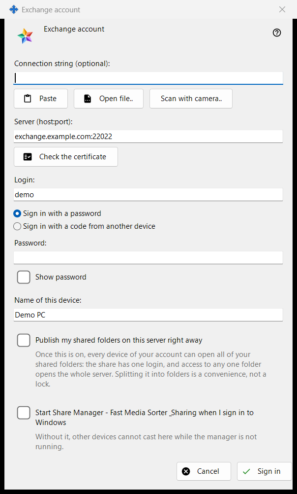
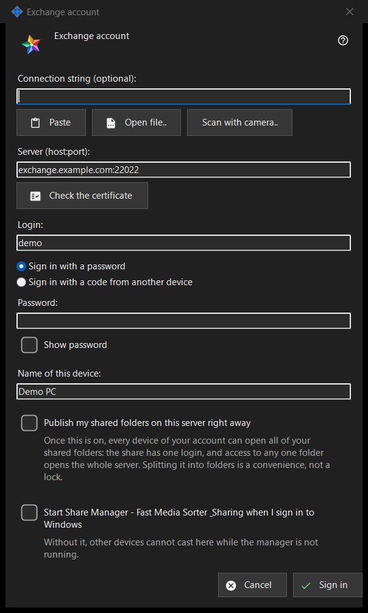

Exchange account
What this is for
Signs this PC in as a device of an account on a Media Exchange Server. It opens from the 'Sign in..' button on the Exchange account page of the Share Manager settings, and from 'Publish through an exchange server..', which opens it with the publishing option already ticked.


In this order
- Optionally paste, open or scan a connection string; it fills the server and the login.
- Press 'Check the certificate' and, unless the system trusts it or the string carried it, compare the fingerprint with the operator's and press 'Trust this certificate'.
- Enter the login and the password or pairing code.
- Set the device name and the options.
- Press 'Sign in'.
The elements
Connection string
'Connection string (optional):' takes a string you paste with 'Paste', load from a .fmsexch file or a QR image with 'Open file..', or read with 'Scan with camera..'. It only fills in the server and the login; nothing connects until you press 'Sign in'. A string with a fingerprint pins that certificate, so there is nothing to compare by hand. A string with an invitation switches the window to registration. An unusable string gets a one-line refusal.
Server and certificate
'Check the certificate' connects to 'Server (host:port):' and shows 'Fingerprint of the server's certificate:'. If the system trusts the certificate, nothing needs pinning. Otherwise compare the fingerprint with the one the server operator gave you and press 'Trust this certificate'; only that button accepts a certificate the system does not know. Changing the server text forgets the check. Enter does nothing until a certificate is trusted, so no password goes to a server nobody vouched for.
Login, password and pairing code
Enter 'Login:' and choose 'Sign in with a password' ('Password:', with 'Show password') or 'Sign in with a code from another device' ('Pairing code:', issued by another device of the same account). The field is cleared the moment its value is sent, whatever the result; the device keeps only a token, never the password.
Registration by invitation
When the string carries an invitation, the two sign-in choices give way to registration: 'The account's password:' and 'Password once more:' set the new password, which must meet the policy shown (at least 10 characters with an upper-case and a lower-case Latin letter and a digit), and the button reads 'Create the account'.
Device name and options
'Name of this device:' (up to 64 characters) starts as the computer name. 'Publish my shared folders on this server right away' is off unless you came through 'Publish through an exchange server..'; once on, every device of your account can open all your shared folders, because the sharing has one login. The last option starts the Share Manager when you sign in to Windows (off by default), so other devices can cast to this PC.
One server at a time
A device belongs to one server. Signing in to another asks whether to leave the current one, and publishing on the old server stops. After a failed contact the button 'Why doesn't it connect?..' opens the connection test.
Manager settings · SFTP sharing settings · Exchange server settings